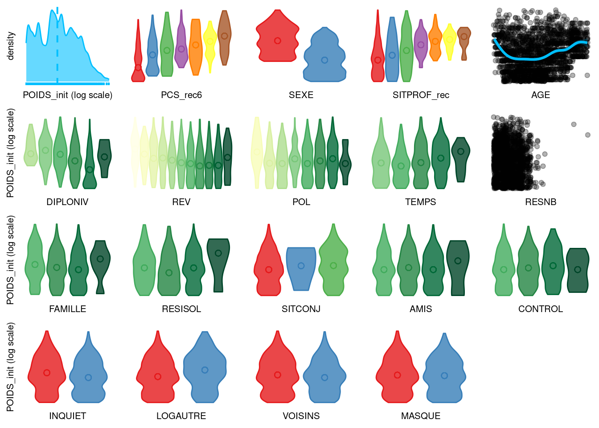

── Attaching core tidyverse packages ──────────────────────── tidyverse 2.0.0 ──
✔ dplyr 1.1.3 ✔ readr 2.1.4
✔ forcats 1.0.0 ✔ stringr 1.5.0
✔ ggplot2 3.4.3 ✔ tibble 3.2.1
✔ lubridate 1.9.2 ✔ tidyr 1.3.0
✔ purrr 1.0.2
── Conflicts ────────────────────────────────────────── tidyverse_conflicts() ──
✖ dplyr::filter() masks stats::filter()
✖ dplyr::lag() masks stats::lag()
ℹ Use the conflicted package (<http://conflicted.r-lib.org/>) to force all conflicts to become errorsvico exploration
Setup
Chargement des données et nettoyage
Les variables catégorielles ne sont pas ordonnées dans le jeu de données, mais elles le sont sémantiquement. On va donc aligner les formats de donnée avec leur sémantique:
vico <- readxl::read_xlsx("data/vico2020.xlsx") %>%
mutate_if(is.character, as.factor) %>%
mutate(
RESISOL = factor(
RESISOL,
ordered = TRUE,
levels = c(
"Non",
"Oui, mais pas autant que je voulais",
"Oui, autant que je voulais"
)
),
TEMPS = factor(
TEMPS,
ordered = TRUE,
levels = c(
"Oui, je manque vraiment de temps libre",
"Oui, je manque un peu de temps libre",
"Non, je ne manque pas vraiment de temps libre",
"Non, je ne manque pas du tout de temps libre"
)
),
CONTROL = factor(
CONTROL,
ordered = TRUE,
levels = c("Non, jamais", "Oui, une seule fois", "Oui, plusieurs fois")
),
AMIS = factor(
AMIS,
ordered = TRUE,
levels = c("Moins souvent", "Ni plus ni moins", "Plus souvent")
),
FAMILLE = factor(
FAMILLE,
ordered = TRUE,
levels = c("Moins souvent", "Ni plus ni moins", "Plus souvent")
),
POL = factor(
POL,
ordered = TRUE,
levels = c(
"Très à droite",
"A droite",
"Au centre",
"Ni à gauche ni à droite",
"A gauche",
"Très à gauche",
"Je ne me retrouve pas dans ces catégories"
)
),
DIPLONIV = factor(DIPLONIV,
ordered = TRUE,
levels = c(
"Aucun diplôme" ,
"Le certificat d'études ou un diplôme de l'enseignement secondaire autre que le baccalauréat (par exemple : CAP, BEP, Bre",
"Le baccalauréat",
"Un diplôme universitaire correspondant à moins de 4 années d'études supérieures après le baccalauréat (par exemple : DUT",
"Un diplôme universitaire correspondant à plus de 4 années d'études supérieures après le baccalauréat (maîtrise, DEA, DES"
)
),
REV = factor(
REV,
ordered = TRUE,
levels = c(
"Moins de 800 euros par mois",
"De 800 euros à moins de 1200 euros par mois",
"De 1200 euros à moins de 1600 euros par mois",
"De 1600 euros à moins de 2000 euros par mois",
"De 2000 euros à moins de 2500 euros par mois",
"De 2500 euros à moins de 3000 euros par mois",
"De 3000 euros à moins de 4000 euros par mois",
"De 4000 euros à moins de 5000 euros par mois",
"De 5000 euros à moins de 6000 euros par mois",
"6000 euros par mois et plus" )
),
)Quelques visualisations de diagnostique
vis_miss(vico %>% select(-ID), cluster = TRUE)
vis_dat(vico %>% select(-ID))
Quelques visualisations exploratoires


Des histoires avec ces données
Les maronniers
Les variables DIPLONIV pour le Niveau de Diplôme et REV pour les revenus sont trop verbeuses pour des graphiques, on la recode ici: